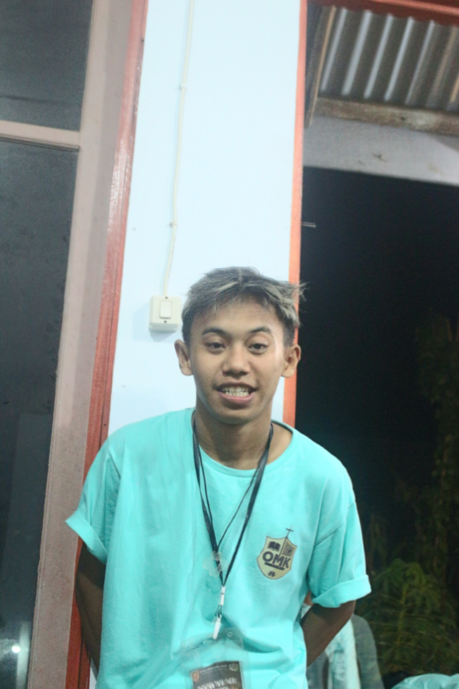

Nama : Fidelis Erza Firmandika
NPM : E1G022054
Program Studi : Teknologi Industri
Universitas : Universitas Bengkulu
Email : fideliserza12@gmail.com
Asal : Sidodadi, Pondok Kelapa, Bengkulu Tengah
Hobi : Selain Mencintaimu, aku juga hobi balap
Foto :
| Jam | Mata Kuliah | Dosen | Ruangan |
|---|---|---|---|
| 08.00 - 09.40 | Komputer & Pemrograman | Arina Fatharani | Diklat 3 R.20 |
| 10.00 - 11.40 | Rekayasa Proses | Wica | Diklat 3 R.20 |
| 14.00 - 15.40 | Karya Tulis Ilmiah | Wica | GB 1 R.4 |
| Jam | Mata Kuliah | Dosen | Ruangan |
|---|---|---|---|
| 14.00 - 15.40 | Statistik Dasar | - | Diklat 3 R.21 |
| Jam | Mata Kuliah | Dosen | Ruangan |
|---|---|---|---|
| 10.00 - 11.40 | Bahasa Inggris Akademik | - | Diklat 3 R.20 |
| 12.00 - 13.40 | Proyek Perencanaan Industri | - | GB 1 R.15 |
| 14.00 - 15.40 | Analisis Pengambilan Keputusan | - | GB 1 R.4 |
| Jam | Mata Kuliah | Dosen | Ruangan |
|---|---|---|---|
| Ketentuan Dosen | Studi Lapangan Industri | - | GB 1 R.4 |
| Jam | Mata Kuliah | Dosen | Ruangan |
|---|---|---|---|
| 08.00 - 09.40 | Teknologi Hasil Perkebunan | - | GB 1 R.9 |